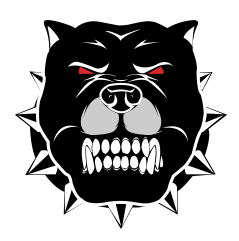

Analyse et une présentation de la ménagerie
Sage l’ancien
C’est le cochon le plus âgé de la ferme, de la race Verrat Middle White, il rêve d’un monde dans lequel les animaux sont libres. Ce personnage insuffle la rébellion et l’égalité entre les animaux. Son idéologie et son rôle de leader le rapprochant de Karl Marx et de Lénine. Et tel l’initiateur de la révolution russe, il fini corrompu et dérive de son idéologie, et fini idéalisé par son public.
Napoléon (César dans sa première traduction française)
C’est le leader des cochons. Il est décrit comme un gros Berkshire verrat avec un air féroce, il est gourmand, corrompu et avide de pouvoir. Son caractère et sa position le rapproche de Joseph Staline. Il est considéré comme un tyran ‘étant imposé dirigeant après s’être débarrassé des humains. Mais son nom augmente la portée du texte. En effet Napoléon est aussi un personnage lui ressemblant, ayant usurpé la révolution française pour sa soif de pouvoir.
Boule de neige
Il est considéré comme rival de Napoléon. Il fut le premier chef après la révolution. Il s’est opposé courageusement aux humains, mais ayant contrarié Napoléon il fut accusé de trahison. Il fut chassé de la ferme et tenu comme responsable des malheures de la ferme. Ce personnage représente Léon Trotsky, important acteur de la révolution Russe mais opposé à Staline et sa bureaucratisation du parti communiste, il fut exilé par ce dernier et tenu responsable de nombreux méfaits.
Brille-Babil
Ce petit cochon blanc est porte parole et second de Napoléon. Il rapporte donc les décisions de Napoléon aux animaux de la ferme. On peut le considéré comme chef de la propagande de Napoléon, un aspect important du régime stalinien. Il emploi la persuasion comme la menace pour imposer le régime. Ce rôle la rapproche de Viacheslav Molotov, bras droit de Staline, n’ayant pas joué un grand rol dans la révolution mais montrant sa soumission total à Napoléon.
Minimus
C’est un cochon poète clamant les louanges de Napoléon. Il créa Camarade Napoléon le nouvel hymne de la ferme après Bêtes d'Angleterre. Cela peut faire référence au changement par l’hymne de l’Union soviétique de L'international en 1944. On peut le rapprocher du poète russe Maïakovski, ce qui est assez interprété. C’est un poète dramaturge futuriste, qui écrit sur la révolution et créer des utopies. Son caractère rêveur le rapproche de se poète.
Les jeunes cochons
Ils sont quatres et supposé être la progéniture de Napoléon. On leur enseigna la théorie de l’inégalité entre les animaux, ce qui était une dérive russe durant le règne de Staline. On peut aussi analyser cela comme l'embriguadement des jeunes en URSS. Mais ils s’opposèrent à Napoléon et ils furent exécutés. Cet exécution les rapprochent de Grigori Zinoviev, Lev Kamenev, Nikolaï Boukharine et Alexeï Rykov. Qui étaient des opposants à Lenine et furent exécutés durant la Grande Purge.
Malabar
C’est un cheval de trait. C’est un travailleur acharné, et loyal à Napoléon. Il est décrit comme naïf et crédule. Il entretient la ferme à l’aide de sa grande force. Cette dernière effrai les cochons qui ont peur d’une possible révolution. Croyant que tout les soucis peuvent être résolus par le travail, il représente de stakhanovisme qui est une campagne de propagande soviétique prônant cette idée.
Lubie
C’est une jument avide de luxe et de libertée. Elle quitte la ferme après la révolution, représentant les gens abandonnant la Russie à cause de cette dernière.
Moïse
C’est un corbeau apprivoisé par Mrs Jones. Il réapparaît après un exil,et dans la ferme il sert à rassurer les animaux avec différents discours sur la “Montagne de Sucrecandi”. Il représente la religion rassurant le peuple.
Benjamin
C’est un vieil âne, sage, et clairvoyant. Il pressentait la fin tragique de la révolution. Ce personnage possédant du recul sur les évènements est considéré comme étant la représentation de Orwell lui même.
Edmée
C’est une vieille chèvre, aimée de tous. Elle sait lire avec difficulté. Elle n’a pas de grande importance dans les interprétations de la révolution Russe.
Les poules et les vaches
Ces animaux représentent le peuple soumis. Les poules se rebellent contre Napoléon s’étant fait voler leurs oeufs, et les vaches leur lait. Ils sont le râle du peuple durant le régime soviétique, mais sont assez faible face à ce dernier.
La chatte
Représentant les profiteurs, elle réussit à échapper à toutes les corvées et pour profiter de tout ce qu'offre le nouveau système. Par exemple lors de la première réunion où elle vote deux fois, une fois pour la fraternité avec les rats, et la seconde fois, pour leur exclusion.
Les chiens
Au nombre de neuf, il répondent aux ordres de Napoléon. Ils font régner son autorité dans la ferme par la violence. Ils représentent évidemment la police soviétique.
M. Jones le fermier
C’est un homme négligent, alcoolique et ancien propriétaire de la ferme. Il maltraitait et négligeait les animaux. C’est évidemment l’allégorie du Tsar Nicolas II renversé lors de la révolution Russe en 1917.
M.Whymper
Cet homme est employé par Napoléon liant les différentes fermes. Il approvisionne la ferme en produits et notamment des produits de luxe et de l’alcool pour les cochons. Mettant en avant leur égoïsme. Il est souvent interprété comme étant le président Roosevelt, qui négociait les transaction entre la russie et le monde.
M. Frederik
Propriétaire d’une bien entretenue ferme voisine. Il fait alliance un moment avec Napoléon avant de devenir ennemi. Il représente donc Hitler à la tête de l’allemagne. L’alliance représente donc le pacte germano-soviétique visant à mieux envahir l’URSS.
M.Pilkington
C’est un autre propriétaire de ferme. Cette dernière s’appelle Foxwood une grande ferme. En mauvais terme avec Frederik, il craint la révolution et Napoléon. Il est souvent interprété comme représentant de Churchill dominant le Royaume-Uni.